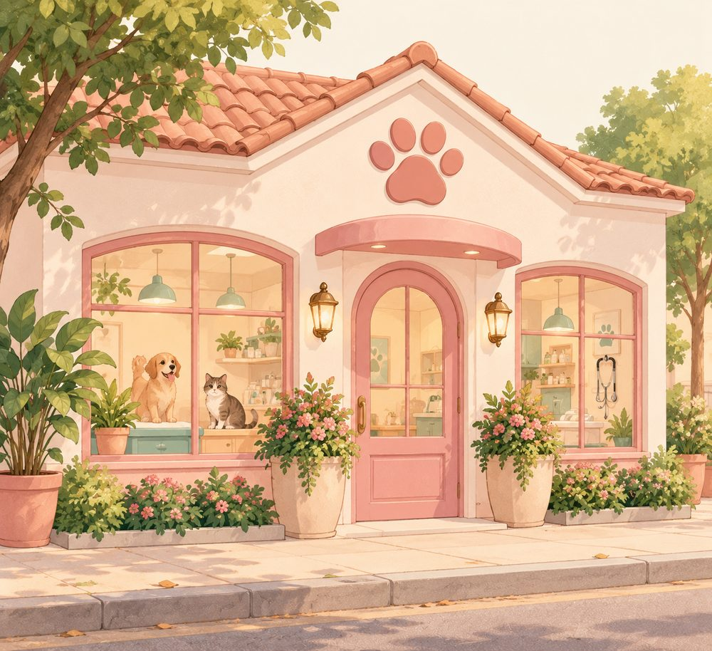

Contactos
Venha visitar-nos. Há sempre biscoitos para os patudos!
Morada
Rua das Flores, 120
4000-000 Porto
Horário
Segunda a sábado: 09:00 – 18:00
Domingo: fechado
Telefone
220 000 000
geral@patinhas.pt

Horário da semana
| Segunda a sexta | 09:00 – 18:00 |
| Sábado | Fechado |
| Domingo | Fechado |
Urgências fora do horário: ligue 220 000 001.